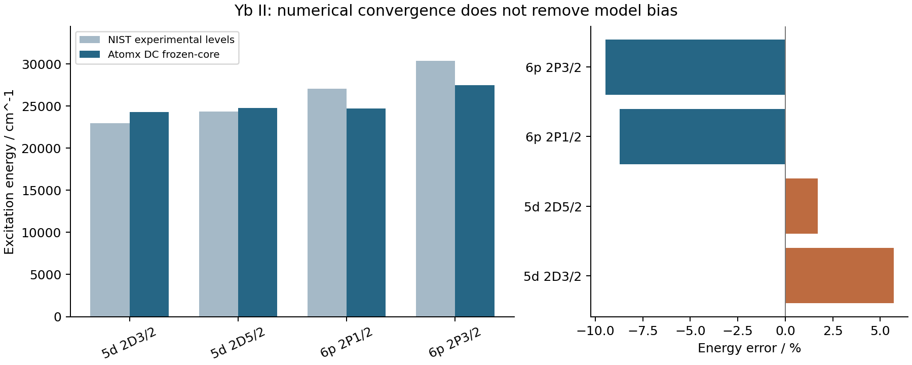
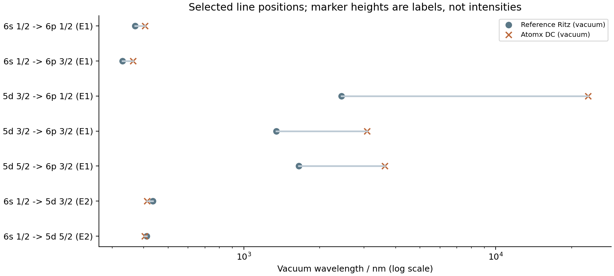

Atomx 实算报告 · 2026 年 10 月 8 日
研究对象：Yb II，Z = 70，69 个电子；自由离子、无晶体宿主。
主结果：冻结 [Xe]4f¹⁴ 自洽闭核的 Dirac–Coulomb 基线；5 个能级、12 条原生辐射记录，选 7 条与实验能级对照，并对照 2 个直接寿命实验。
Atomx 已实际完成这套 Yb⁺ 基线的能级、E1/E2/M1 跃迁和寿命计算。数值检查通过，实验精度目标未通过。 6p₁/₂ 与 6p₃/₂ 激发能分别低约 8.72% 和 9.47%；5d 精细结构分裂低约 65%。数值加密与扩大箱体的变化远小于这些偏差。这是一份可用于定位模型问题的计算证据，不能作为精密 Yb⁺ 线表发布。
已测试的完整静态 Breit 对激发能影响为几十 cm⁻¹；在当前冻结轨道上，所加入的完整两组 4f 空穴组态使 6p 激发能进一步下降约 654/589 cm⁻¹，没有改善实验符合。三种近似 QED 后端的增量连符号都不同。因此，不能把默认 QED 数字当作物理误差预算，也不能简单再加一次 QED 或仅扩充这一组空穴态来补齐偏差。
当前最有价值的下一步是平衡地检验核极化、核–价电子相关及轨道松弛，同时独立核对跃迁算符。 这些是下一项判别假设；本次没有建立唯一误差归因，也没有做跨代码同轨道验证。
用户未指定稀土元素、电荷态或晶体宿主，本次采用已告知的 Yb⁺ 自由离子默认对象。它以闭合 4f¹⁴ 核加一个价电子构成可控起点，又有 4f 空穴组态可用于检验稀土的相关与混合问题。单离子实验同时提供能级位置和辐射寿命，适合把“求解器是否准确”与“物理模型是否足够”分开验证。
Yb⁺ 的 S–P 共振线用于冷却和读出，S–D 的 E2 跃迁与光钟有关；寿命还约束光钟相干时间。这些联系有直接单离子实验依据，见 Olmschenk 等，2009 和 Shao 等，2023。这是此前谱学与未来产业研究体系中量子计量案例的一次实算；不把原子计算通过等同于器件性能验证。
本次不覆盖 Nd³⁺、Eu³⁺ 等在晶体中的发光。那类对照还需指定宿主、掺杂位点、晶场、多重态、温度以及振动环境，不能直接把自由离子线表当作材料实测发光谱。
主计算使用有限 Fermi 核下的 Dirac–Coulomb 哈密顿量，在所保留的电子分支和冻结共同轨道空间内求解。先以非局域 Hartree–Fock 交换自洽求解 68 电子闭核 [Xe]4f¹⁴，再在该核势中求 6s₁/₂、6p₁/₂、6p₃/₂、5d₃/₂、5d₅/₂ 五个未占据价电子根。19 个核径向轨道与 5 个价轨道形成共同正交基底。
69 电子组态为 [Xe]4f¹⁴6s、[Xe]4f¹⁴6p、[Xe]4f¹⁴5d，共 5 个 jj 耦合 CSF，各目标 J/宇称块均为一维。完整 69 电子 CSF 哈密顿量直接计算总能量，并核对
E(69 电子冻结核态) = E(68 电子自洽闭核) + ε(价电子)
激发能 = E(目标态) − E(6s₁/₂)
光子波数 = [E(高态) − E(低态)] / (hc)
此等式只在本次明确的冻结核模型内使用；没有把一般多电子轨道能差冒充跃迁能量。主线表采用 Atomx CSF 跃迁算符，保留实际有限波长，计算 E1、E2、M1 的长度与速度表示；速率使用计算自己的能量，没有替换成实验波长。
代码的 build_virtual_basis(..., potential_mode="VN") 中 N 是 68 电子参考闭核，所以它保留的 V⁶⁸ 正是相对 69 电子目标的 V^(N−1)。在此处选字符串 VN-1 会再移除一个核电子，构成另一种物理参考势，不能混用。
每次运行先保存契约、输入、完整 Atomx Python 源哈希与停止条件。闭核自洽 tol = 10⁻⁸；价电子在占据轨道正交补空间内的广义本征对残差 < 10⁻⁷ Ha；轨道度量误差 < 10⁻⁸；完整 CI 总能量与“核 + 价电子”差 < 10⁻⁸ Ha。每次求解上限 900 s，单 BLAS 线程。实验激发能目标为相对误差 ≤ 5%，与数值门限分别判断。
有一次细网格价电子普通求解的残差未通过。之后重用原已收敛闭核，在相同受约束 Fock 空间中应用现有原生 bordered Newton 本征对细化，没有改变哈密顿量或放宽门限；同根重叠约 1，能量变化最多约 4 × 10⁻⁹ Ha。原失败文件完整保留。
主结果的闭核残差 1.12 × 10⁻⁹，最大价电子残差 4.95 × 10⁻¹¹ Ha，轨道度量误差约 10⁻¹⁵，完整 CI 能量一致性误差最大 2.65 × 10⁻¹¹ Ha。这是内部一致性检查，独立实验对照仍不可省略。
5 个低能级取自 NIST Yb II 能级表，表中对应 M67 历史实验文献。本次选定的是明确可追溯的 handbook 子集，不声称它是最新的同位素分辨完整 ASD。该表没有给能级不确定度，因此打印小数位不作为实验误差条。
主对照统一使用实验能级差在此推导的 Ritz 真空波长。它不是独立实测的波长值。NIST 持久线表另给两条实测共振线：369.4190 nm 和 328.9370 nm，均为空气波长；空气线表确认介质约定。CSV 将实测空气波长列与 Ritz 真空波长列分开，不直接拿空气波长减真空计算值。
能级和共振线来源见 NIST 文献键。表中的 A 值是 M00 汇编，不能冒充新的直接寿命实验。本报告寿命采用以下直接测量：
所有激发能相对同一模型的 6s₁/₂ 基态。表中只保留对模型判断有意义的小数位，完整原始值在 JSON/CSV。
| 能级 | 实验 / cm⁻¹ | 计算 / cm⁻¹ | 计算−实验 / cm⁻¹ | 相对偏差 |
|---|---|---|---|---|
| 6s ²S₁/₂ | 0.00 | 0.00 | +0.00 | — |
| 5d ²D₃/₂ | 22960.80 | 24272.56 | +1311.76 | +5.71% |
| 5d ²D₅/₂ | 24332.69 | 24752.15 | +419.46 | +1.72% |
| 6p ²P°₁/₂ | 27061.82 | 24702.42 | -2359.40 | -8.72% |
| 6p ²P°₃/₂ | 30392.23 | 27513.07 | -2879.16 | -9.47% |

| 精细结构 | 实验 / cm⁻¹ | 计算 / cm⁻¹ | 相对偏差 |
|---|---|---|---|
| 5d | 1371.89 | 479.59 | -65.04% |
| 6p | 3330.41 | 2810.65 | -15.61% |
6p 两态的整体位置和精细分裂同时偏低，5d 两态的绝对激发能误差较小，但分裂误差很大。某一条线接近实验不代表整个相对论和相关模型可靠。 模型甚至将 6p₁/₂ 放在 5d₅/₂ 之下，而实验排序相反；跨项跃迁的小能量差因此更敏感。
表中箭头表示从低态到高态的激发；自发辐射方向相反。
| 低态 → 高态 | 类型 | 实验能级推导真空 λ / nm | 计算真空 λ / nm | λ 偏差 |
|---|---|---|---|---|
| 6s ²S₁/₂ → 6p ²P°₁/₂ | E1 | 369.5243 | 404.8186 | +9.55% |
| 6s ²S₁/₂ → 6p ²P°₃/₂ | E1 | 329.0315 | 363.4636 | +10.46% |
| 5d ²D₃/₂ → 6p ²P°₁/₂ | E1 | 2438.4178 | 23263.4551 | +854.04% |
| 5d ²D₃/₂ → 6p ²P°₃/₂ | E1 | 1345.6360 | 3085.9378 | +129.33% |
| 5d ²D₅/₂ → 6p ²P°₃/₂ | E1 | 1650.2903 | 3621.9807 | +119.48% |
| 6s ²S₁/₂ → 5d ²D₃/₂ | E2 | 435.5249 | 411.9878 | -5.40% |
| 6s ²S₁/₂ → 5d ²D₅/₂ | E2 | 410.9698 | 404.0053 | -1.69% |

图的纵坐标用于区分谱线标签，不表示发光强度；波长横轴为对数。没有构造实验强度谱，也没有假定温度、布居、仪器函数或人为展宽。
D₃/₂–P₁/₂ 的实验能级差为 4101.02 cm⁻¹，模型仅约 429.86 cm⁻¹，导致预测波长从实验约 2.438 μm 变为约 23.263 μm。此误差是两态偏差在能差中的放大。Yb⁺ 常用的 935 nm 再泵浦线连接 D₃/₂ 与另一 4f 空穴激发态，不是这里的 D₃/₂–6p₁/₂；本报告不混淆这两条线。
| 高态 → 低态 | 类型 | A长度 / s⁻¹ | A速度 / A长度 |
|---|---|---|---|
| 6p ²P°₁/₂ → 6s ²S₁/₂ | E1 | 1.60522e+08 | 0.91314 |
| 6p ²P°₃/₂ → 6s ²S₁/₂ | E1 | 2.17688e+08 | 0.905209 |
| 6p ²P°₁/₂ → 5d ²D₃/₂ | E1 | 1199.56 | 37.8535 |
| 6p ²P°₃/₂ → 5d ²D₃/₂ | E1 | 49633.3 | 4.1177e-05 |
| 6p ²P°₃/₂ → 5d ²D₅/₂ | E1 | 288265 | 0.0504296 |
| 5d ²D₃/₂ → 6s ²S₁/₂ | E2 | 35.6884 | 1.09042 |
| 5d ²D₅/₂ → 6s ²S₁/₂ | E2 | 40.821 | 1.11619 |
A 为高态向低态的自发辐射率，长度表示作为本次主值。速度/长度之比是计算诊断，没有通过调节波长或重新归一化强制变成 1。特别是 D–P 的三个 E1 通道存在很大的表示差异：这些速率未获可靠性认证。非局域 DF 交换下的有效算符一致性、遗漏相关和状态响应需要独立区分；本次没有唯一解释，也不把该差异直接当作严格误差条。
在五能级模型内按 τ = 1 / Σ A 求寿命，包含已计算的所有 E1/E2/M1 向下通道：
| 上态 | 实验寿命 | 模型寿命 | 相对偏差 |
|---|---|---|---|
| 6p ²P°₁/₂ | 8.12 ± 0.02 ns | 6.2296 ns | -23.28% |
| 5d ²D₃/₂ | 54.83 ± 0.18 ms | 28.0203 ms | -48.90% |
P₁/₂ 包含向 S₁/₂、D₃/₂ 的 E1；D₃/₂ 包含向 S₁/₂ 的 E2 和很小的 M1。未包含扩展 4f 空穴态或所有高阶多极通道，因此这些数值是模型内辐射寿命。当前寿命偏差 23% 和 49%，远大于实验不确定度，不提供受控理论不确定度或有意义的精密符合统计量。
这些探针使用已经通过门限的 v68_default 共同轨道，保持同一核、电子数、相位、径向度量和 DC 算符。主线表采用更细的 v68_box90_newton；因素数字保留各自原始基底，不偷偷拼接成一个“最终精密结果”。因素组合及其交叉项尚未计算。
| 能级激发能增量 / cm⁻¹ | 静态完整 Breit | 默认模型 QED | 4f 空穴 CI |
|---|---|---|---|
| 5d ²D₃/₂ | +27.59 | +340.97 | +0.00 |
| 5d ²D₅/₂ | -14.24 | +403.88 | +0.00 |
| 6p ²P°₁/₂ | -37.23 | +320.41 | -654.29 |
| 6p ²P°₃/₂ | -65.54 | +411.79 | -589.24 |
采用 Atomx 完整静态 Breit = Gaunt + 静态迟滞部分，在原轨道上重新组装 CI 哈密顿量并求解；没有把 Gaunt 单项叫作完整 Breit，也没有包含频率依赖横向光子交换。原 DC 重放通过，特征对残差通过。
全部能级包含很大的共同核 Breit 贡献，因此必须取上态与基态增量之差。基态绝对 Breit 改变量约 +14.14849 Ha，不能把它直接当作跃迁能量修正。目标激发能增量只有约 −66 至 +28 cm⁻¹，不能消除当前数千 cm⁻¹ 的偏差。内部求解通过不证明 Breit 物理算符跨代码正确；本次未做独立同轨道算符基准。
完整加入声明的两组组态 [Xe]4f¹³6s² 和 [Xe]4f¹³5d6s 的全部 jj-CSF，连同原 5 个 CSF 共 46 个、10 个 J/宇称块。最大未耦合行列式维数为 36，未筛掉弱组态、未改变原生资源上限。固定轨道 CI 最大残差 1.58 × 10⁻¹¹ Ha。
这些新增组态为奇宇称，固定轨道下偶宇称 S/D 块能量不变，控制实际通过。按同 J/宇称和对嵌入原态最大重叠匹配，6p₁/₂、6p₃/₂ 的原态权重为 0.984985 和 0.985733；激发能下降 654.29 和 589.24 cm⁻¹，使已经偏低的能级更低。
这个负结果表明：本次选定的空穴混合不是单独修复 6p 偏低的方案。 它不等于排除全部电子相关，因为冻结基态未同步获得核极化与核–价相关，新增空穴轨道也未重新优化。需要平衡扩充上下态的相关空间，而非按实验接近程度挑组态。
首次因素计算使用 Uehling VP + 软件 Z ≥ 37 默认的 indelicato 近似 SE，在固定轨道上取一阶态期望值。随后以同一组五个价轨道比较另外两个原生近似后端；闭核项共同，直接计算价轨道差并重放原默认结果，差小于 10⁻⁹ cm⁻¹。
| VP + 近似 SE：激发能增量 / cm⁻¹ | 6p₁/₂ | 6p₃/₂ | 5d₃/₂ | 5d₅/₂ |
|---|---|---|---|---|
| indelicato | +320.41 | +411.79 | +340.97 | +403.88 |
| shabaev_local | -35.61 | -32.42 | -38.36 | -34.90 |
| flambaum_ginges | +2.74 | +1.51 | -0.23 | -0.69 |
三者不应视为同等精度的 QED 理论：indelicato/Mohr 在 n = 6 轨道上走表外低阶估算分支与核吸引期望值比例近似，未针对低电荷重元素价电子建立精密验证；shabaev_local 是局域部分，缺非局域模型算符；flambaum_ginges 是电势近似，含其简化 WK 项，缺磁形状因子。这里的名称是实际软件后端名，不保证等同于原文献完整实现。
默认后端给出 6s 价轨道 SE 为 −0.00157410 Ha；局域后端为 +0.000233158 Ha；FG 近似为 +0.0000747282 Ha。这种符号和尺度差异指向近似模型适用性需先审计。不能把默认 +320/+412 cm⁻¹ 宣称为可信的 Yb⁺ 物理 QED 修正，后端差异也不是理论误差的严格界。
关于“加 QED 后是否再自洽一次”：本次计算只检验一阶固定轨道增量，没有宣称完成 QED 轨道自洽。当前五态均处于一维 J/宇称块，单独重对角化不能生成缺失的核极化或相关响应。要检验轨道松弛，需要选择适用的辐射模型，在同一核与空间中重求轨道及完整算符；先解决默认高 n 近似的适用性更有判别力。
| 对照 | 最大激发能变化 / cm⁻¹ | 7 条目标线最大 A 相对变化 | 预设能量门限 |
|---|---|---|---|
| 加密径向网格并细化本征对 | 6.71e-05 | 3.14e-07 | < 1 cm⁻¹，通过 |
| 同一细网格：R = 60 → 90 bohr | 7.98e-07 | 8.36e-09 | < 1 cm⁻¹，通过 |
这里的“通过”限定于两次明确控制和当前冻结核模型，不是任意基底收敛的数学界。加密与箱体控制远小于实验能级偏差，因此足以排除本次网格/箱体选择作为主差距来源；不能据此排除其他算符或表示错误。
主结果之外完整保留以下运行：
dc_default：共同轨道五态 EOL 运行后，初版整对象保存遇到 mappingproxy pickle 错误；没有从此运行宣称结构化谱线。dc_default_replay 和 dc_refined：EOL 线搜索失败，轨道驻值残差分别约 2.82 × 10⁻⁶ 和 5.58 × 10⁻⁷，高于 10⁻⁷ 门限。总能量稳定不替代驻值通过，未将这两次结果用于主速率。dc_ground_frozen：原生基态场 fac_frozen 对照通过自身 SCF 判据。初始化含四个 0.001 虚轨道占率，参考势不是纯 V⁶⁸，因此只作方法变化探针，不与主结果混用。v68_refined：闭核通过，5d₅/₂ 价轨道残差约 1.22 × 10⁻⁷ Ha，未通过；保留数据并停止产出主速率。之后同空间原生 Newton 细化解决该本征对残差。v68_default、v68_box90、v68_refined_newton 和 v68_box90_newton：均按各自数值门限通过；最后一个为主结果。三个因素探针也通过其各自求解/重放判据，但不证明实验精度。计算峰值内存和经过时间在原始 JSON 中，机器同时运行其他负载，没有做受控性能比较。不使用这些时间宣传速度优势。
本目录是该案例的权威证据入口，依赖实际 Atomx src/atomx 源快照、CSF/DF/B 样条与跃迁实现、原始 NIST/论文数据及本目录运行契约。目录内提供：
results/ 中的输入、契约、能量、速率、CI、轨道 NPZ、源哈希、成功与失败状态；references/ 中的 NIST 页面与开放寿命论文原件。在仓库根目录使用现有 .venv，标签须使用新名称避免覆盖原结果：
TASK=docs/rare_earth_yb_spectrum_2026_10_08
.venv/bin/python "$TASK/run_core_valence.py" \
--label replay_v68_fine --he 0.125 --hmax 0.5 \
--rmax 90 --refine-eigenpairs
.venv/bin/python "$TASK/run_core_valence.py" \
--label replay_v68_default
.venv/bin/python "$TASK/probe_factors.py" \
--base replay_v68_default --factor corrections
.venv/bin/python "$TASK/probe_factors.py" \
--base replay_v68_default --factor 4f_holes
.venv/bin/python "$TASK/probe_qed_models.py" \
--base replay_v68_default
上述生成新的原始实算结果；已交付表格可从已有结果重建：
.venv/bin/python "$TASK/build_comparison.py"
.venv/bin/python "$TASK/build_report.py"
uv run --no-project --with markdown --with weasyprint \
python "$TASK/render_report.py"
本次实际 Atomx 源包含既有未提交更改，不能只用 Git HEAD 复现。每次运行保存全库 Python 哈希，交付前核对所有运行库源码相同且未变化。source_identity.json 的历史 script_sha256 字段来自导入的 run_yb.py 辅助函数；实际主脚本版本在 provenance_notes.json 中补明，原记录未被改写。初始 V⁶⁸ 驱动原件见 source_snapshots/run_core_valence_before_newton.py，Newton 驱动见当前脚本。完整 Atomx 源归档另列入数据包，便于在隔离副本复现。
本阶段交付状态：Yb⁺ 冻结核谱线计算与实验对照完成；精密理论线表未完成且未获认证。 没有修改 Atomx 科学库源码或更改原有科研封存结果。